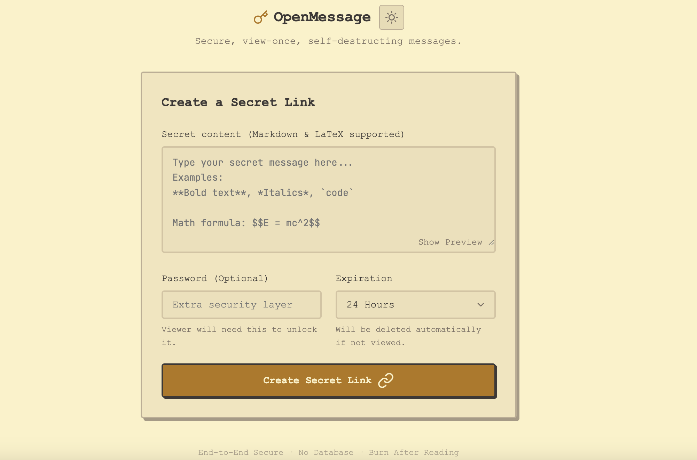
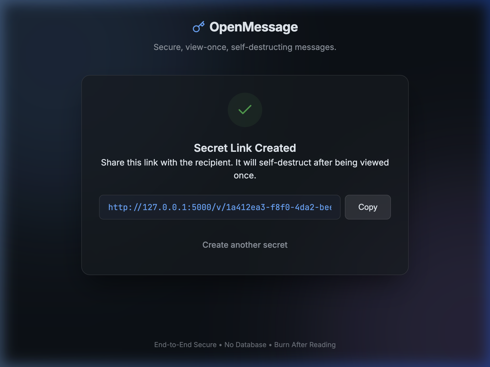

🔐 端到端思路
密钥通过链接片段交给客户端，服务端只保存密文和必要元数据。
密钥通过链接片段交给客户端，服务端只保存密文和必要元数据。
消息成功读取后从服务端删除，减少敏感内容的长期留存风险。
使用本地 JSON 文件存储消息，适合轻量部署、个人服务和小团队使用。
可为消息增加二次密码验证，错误密码不会销毁消息。
链接预览机器人不会触发销毁，必须由用户明确打开信封后读取。
支持 Markdown 与数学公式渲染，适合发送说明、片段和格式化内容。
内置浅色和深色体验，适配不同系统偏好。
支持 Flask 本地运行，也可以通过 Gunicorn 部署到生产环境。
保持简单的创建、分享、打开流程，降低发送临时秘密的操作成本。


OpenMessage 是一个 Python + Flask 项目，克隆后安装依赖即可运行。生产环境建议使用 Gunicorn，并配置持久化数据目录和共享限流存储。
git clone <repo-url>
cd openMessage
python3 -m venv venv
source venv/bin/activate
pip install -r requirements.txt
python app.py项目默认启用 UUID 路径校验、CSP、安全响应头、过期清理和请求限流。读取流程会先暂持消息，只有解密成功后才完成删除。